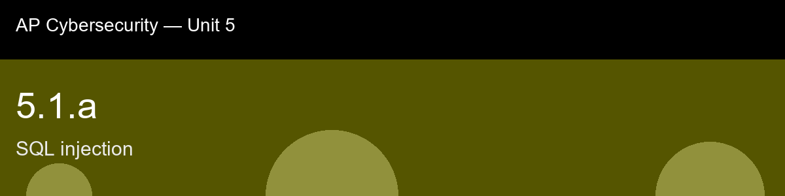

5.1.a recap, SQL Injection
Nice work today. Here's what to lock in:
- Recap handout:
post-lecture-handout.docx
- Simulation: SimLab
- Self-check quiz: due before next class
The big picture: The throughline worth keeping from this skill is the gap between detecting and preventing. The lesson spends real time on payload signatures because a defender scanning traffic needs to recognize SQLi in the wild, but it is explicit that pattern-matching a WAF against known strings is a second-line control, not the fix, an attacker who varies capitalization, encoding, or comment style slips past a signature list that a parameterized query would have made irrelevant regardless of how the payload was spelled. That distinction, detect versus structurally prevent, is going to recur constantly for the rest of this unit, and it is worth pre-loading now: 5.1.b's escaping, 5.2's authorization checks, and 5.5's parameterized queries are all examples of closing the door at the level where the trust boundary actually lives, rather than posting a guard in front of it.
Key terms to lock in:
- SQL injection, an attack that inserts SQL syntax into application input fields so the database executes attacker-controlled commands
- parameterized query, a query template with typed placeholders for data values, preventing user input from being parsed as SQL
- UNION SELECT, a SQL construct that appends a second SELECT to a query; used in injection to extract data from other tables
- comment truncation, using SQL comment characters (-- or /* */) in an injected payload to neutralize the rest of the intended query
- blind injection, an injection technique used when the application returns no visible data; time delays or boolean responses leak information indirectly
- WAF (Web Application Firewall), a network-layer filter that inspects HTTP traffic for known attack patterns including SQLi payloads
Common misconceptions -- don't fall for these:
- "Encoding the output prevents injection", output encoding prevents cross-site scripting; SQL injection is an input parsing problem and requires parameterized queries or strict input validation, not output encoding.
- "Only login forms are vulnerable", any page that uses user-supplied data to build a query (search boxes, URL parameters, HTTP headers, JSON fields) can be an injection point.
- "A WAF is enough", WAFs block known signatures but cannot catch all variants; parameterized queries must be the primary control.
- "Attackers need to know the database schema", error messages and blind-injection techniques allow schema enumeration; the attacker discovers the structure as part of the attack.
Learning objective(s): 5.1.A, 5.1.B

## 5.1.a recap, SQL Injection
Nice work today. Here's what to lock in:
- Recap handout: `post-lecture-handout.docx`
- Simulation: SimLab
- Self-check quiz: due before next class
**The big picture:** The throughline worth keeping from this skill is the gap between detecting and preventing. The lesson spends real time on payload signatures because a defender scanning traffic needs to recognize SQLi in the wild, but it is explicit that pattern-matching a WAF against known strings is a second-line control, not the fix, an attacker who varies capitalization, encoding, or comment style slips past a signature list that a parameterized query would have made irrelevant regardless of how the payload was spelled. That distinction, detect versus structurally prevent, is going to recur constantly for the rest of this unit, and it is worth pre-loading now: 5.1.b's escaping, 5.2's authorization checks, and 5.5's parameterized queries are all examples of closing the door at the level where the trust boundary actually lives, rather than posting a guard in front of it.
**Key terms to lock in:**
- **SQL injection**, an attack that inserts SQL syntax into application input fields so the database executes attacker-controlled commands
- **parameterized query**, a query template with typed placeholders for data values, preventing user input from being parsed as SQL
- **UNION SELECT**, a SQL construct that appends a second SELECT to a query; used in injection to extract data from other tables
- **comment truncation**, using SQL comment characters (`--` or `/* */`) in an injected payload to neutralize the rest of the intended query
- **blind injection**, an injection technique used when the application returns no visible data; time delays or boolean responses leak information indirectly
- **WAF (Web Application Firewall)**, a network-layer filter that inspects HTTP traffic for known attack patterns including SQLi payloads
**Common misconceptions -- don't fall for these:**
- "Encoding the output prevents injection", output encoding prevents cross-site scripting; SQL injection is an input parsing problem and requires parameterized queries or strict input validation, not output encoding.
- "Only login forms are vulnerable", any page that uses user-supplied data to build a query (search boxes, URL parameters, HTTP headers, JSON fields) can be an injection point.
- "A WAF is enough", WAFs block known signatures but cannot catch all variants; parameterized queries must be the primary control.
- "Attackers need to know the database schema", error messages and blind-injection techniques allow schema enumeration; the attacker discovers the structure as part of the attack.
**Learning objective(s):** 5.1.A, 5.1.B